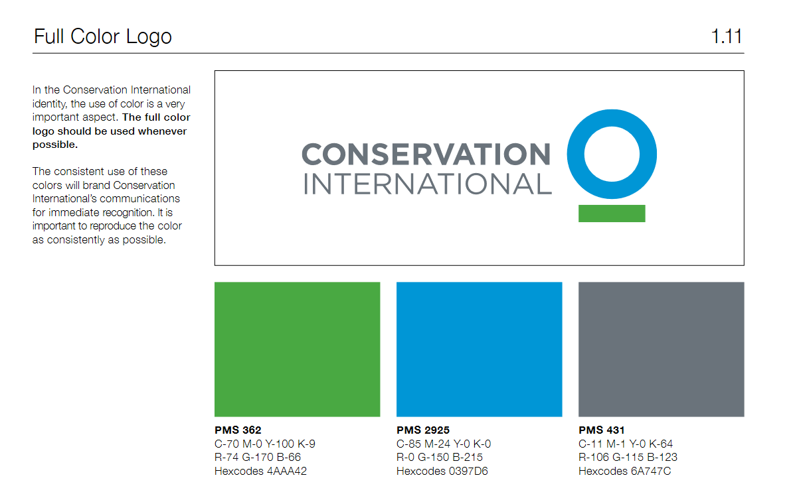

Above is a custom base map I created for Conservation International on Mapbox Studio. Here you can find a link to their style guide that provides information on the use of their logo for official purposes. As is shown in the below screenshot of the style guide, the main three colors used in their logo are #4AAA42 (green), #0397D6 (blue), and #6A747C (grey-blue). I created the base map so that, as you zoom in, the water should darken to the blue color in the logo. Similarly, a more subdued version of the green color is incorporated into the symbols for parks, reserves, and other green spaces, as CI focuses much of their work in these areas. Lastly, I made the base map a very light color so that these green spaces would stand out and added hillshading to illuminate the elevation changes in natural spaces.
